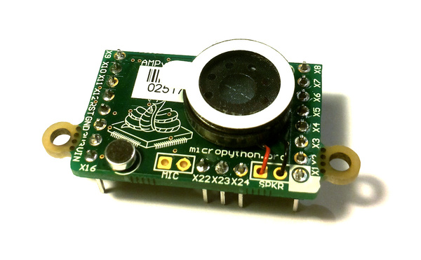

4. AMP音频面板¶
焊接并使用AMP音频面板。
{kind=link}

下面的视频展示了如何将顶盖、麦克风和话筒焊接到AMP面板上。
面板组件的电路图和数据手册，请参见 The pyboard 硬件.
4.1. 示例代码¶
AMP面板有一个通过小功率放大器连接到 DAC(1) 的话筒。
此放大器的容量由一个数字电位器控制，即一个在 IC2(1) 总线上地址为46的I2C设备。
设置音量，需定义以下函数:
import pyb
def volume(val):
pyb.I2C(1, pyb.I2C.MASTER).mem_write(val, 46, 0)
然后:
>>> volume(0) # minimum volume
>>> volume(127) # maximum volume
使用 DAC 对象的 write_timed 方法来播放声音。例如:
import math
from pyb import DAC
# create a buffer containing a sine-wave 创建一个包含正弦波的缓冲区
buf = bytearray(100)
for i in range(len(buf)):
buf[i] = 128 + int(127 * math.sin(2 * math.pi * i / len(buf)))
# output the sine-wave at 400Hz 以400Hz的频率输出正弦波
dac = DAC(1)
dac.write_timed(buf, 400 * len(buf), mode=DAC.CIRCULAR)
您可使用Python wave 模块播放WAV文件。您可从 此处
获取 wave 模块，您还需要可用的块模块 此处.
将这些置于您的pyboard上（在Flash或在顶层目录的SD卡上）。您需要一个用以播放的8位WAV文件，例如 这个，
或使用以下指令转换您的文件:
avconv -i original.wav -ar 22050 -codec pcm_u8 test.wav
然后您可:
>>> import wave
>>> from pyb import DAC
>>> dac = DAC(1)
>>> f = wave.open('test.wav')
>>> dac.write_timed(f.readframes(f.getnframes()), f.getframerate())
此步骤应会播放WAV文件。注意：此操作将整个文件读取入RAM中，所以此文件大小应足够小以存入其中。
播放更大的WAV文件，您需使用微型SD卡来储存。文件也需以符合微控制器的RAM限制的小块读取和发送到DAC中。此处为可播放8位WAV文件的示例函数:
import wave
from pyb import DAC
from pyb import delay
dac = DAC(1)
def play(filename):
f = wave.open(filename, 'r')
total_frames = f.getnframes()
framerate = f.getframerate()
for position in range(0, total_frames, framerate):
f.setpos(position)
dac.write_timed(f.readframes(framerate), framerate)
delay(1000)
此函数读取数据的1/2值并将其发送带DAC。然后等待1秒钟，再将文件光标移动到新位置，以便在for循环的下一个迭代中读取另外1/2的数据。它每秒钟播放音频的1/2。